Didot vs. Bodoni
History of each typeface
Didot
Didot was designed by Firmin Didot in Paris, France during the late 1700s. It was created to make printed books look more elegant and refined, thanks to new printing technology that allowed for thinner lines and sharper details. The typeface was influenced by the Neoclassical period, which focused on balance and simplicity. Today, Didot is still used a lot in fashion magazines and luxury brands because of its classy, sophisticated look.
Bodoni
Bodoni was designed by Giambattista Bodoni in 1798 in Parma, Italy. He created it to make printed text look clean, beautiful, and easy to read while showing off improvements in printing technology. Bodoni became one of the most well-known modern serif typefaces because of its bold contrast between thick and thin lines. It's still commonly used today in fashion, luxury branding, and magazines because it has a timeless and elegant style.
Contrasting The Two Typefaces
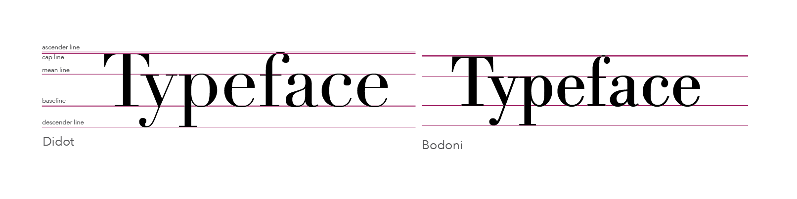
Comparison
Similarities


Differences


Punctuation and Number
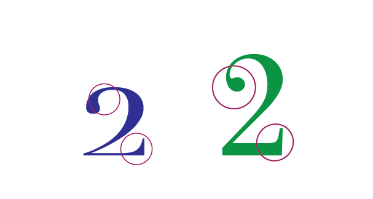
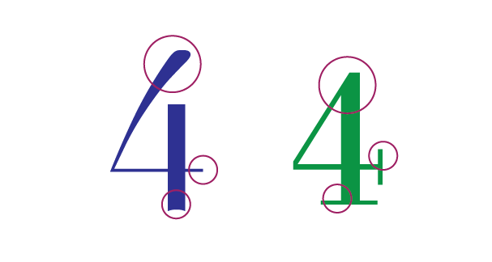
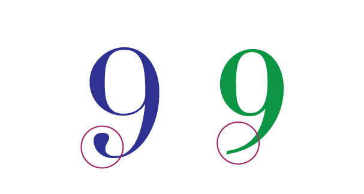
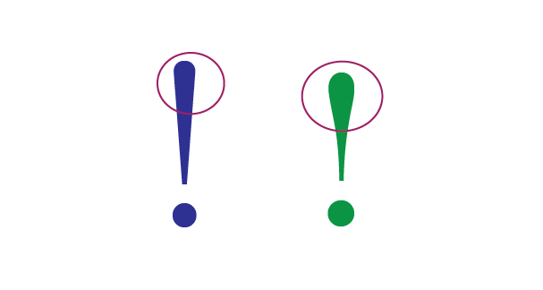
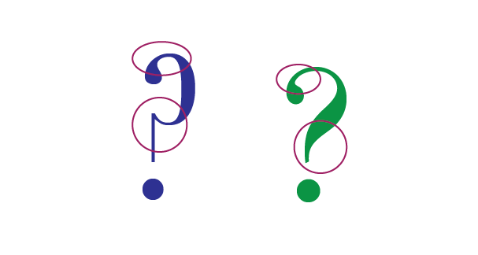
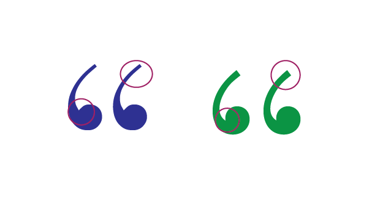
Examples and visual references
Didot
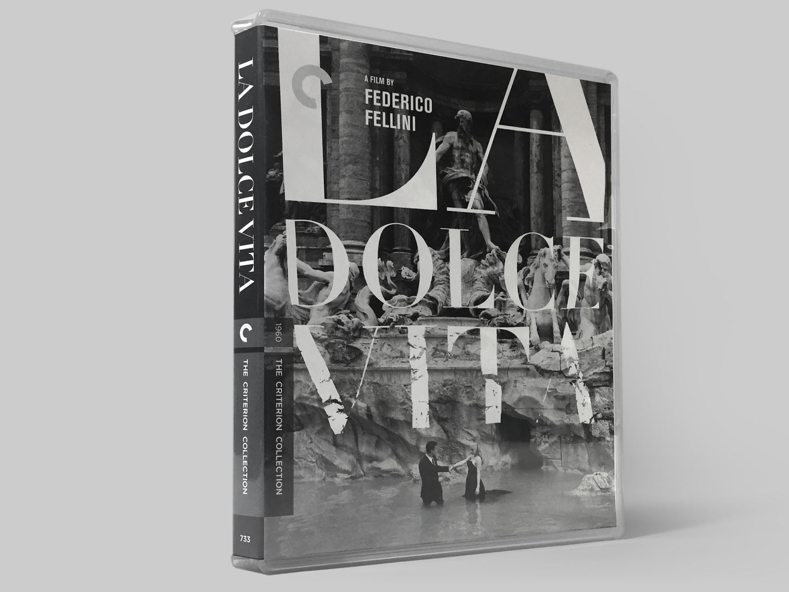
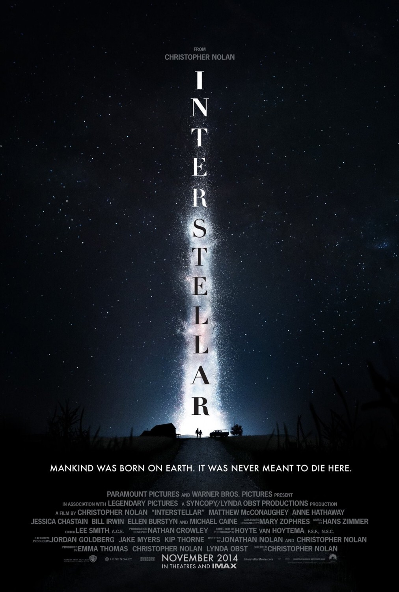
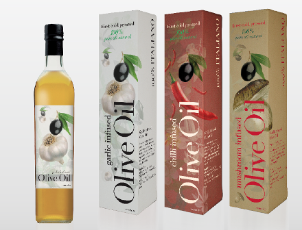

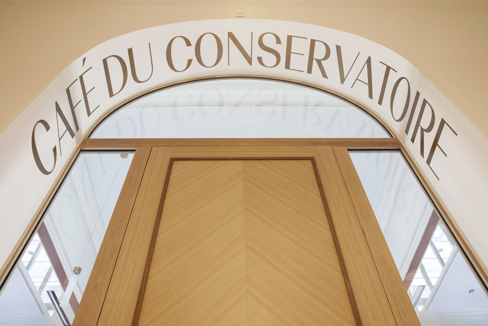
Bodoni
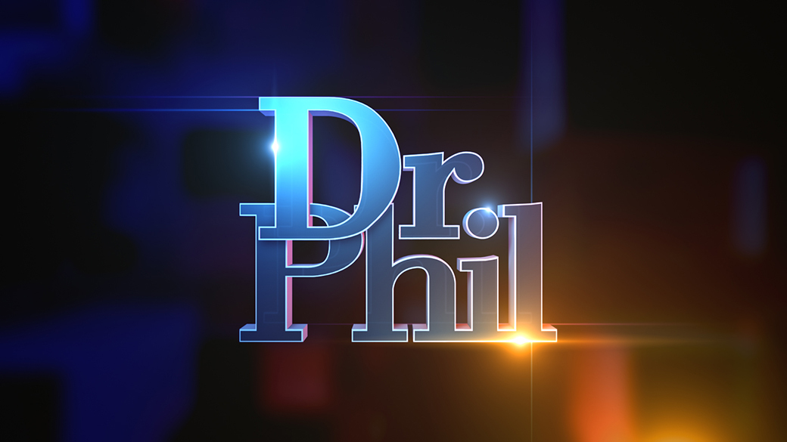

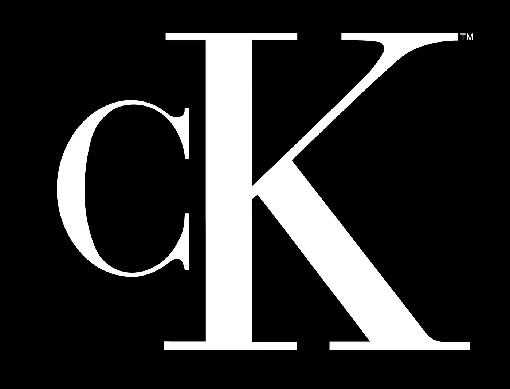
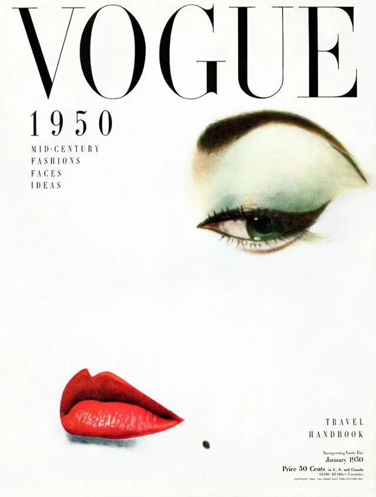
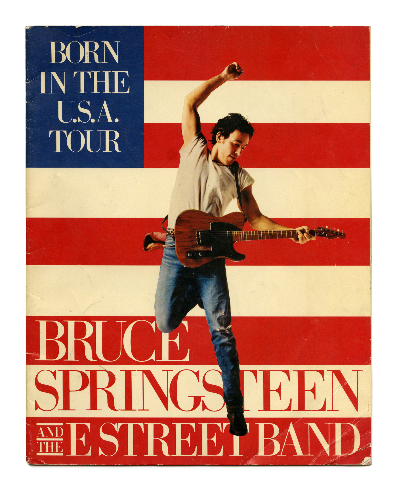